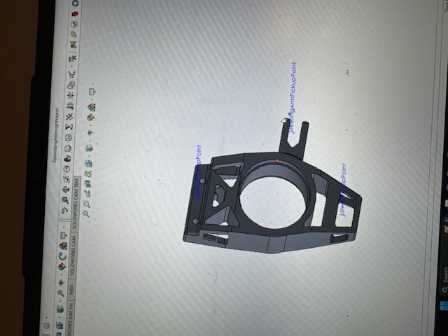

Formula SAE Suspension Upright
Three design iterations for manufacturability
- Role
- Suspension Engineer
- Organization
- Formula SAE, UC Riverside
- Period
- 2024 - 2025
- Tag
- MD-01

The problem
The upright carries wheel loads into the suspension and locates the hub, so it needs tight tolerances on its critical features. The first design achieved that geometry but was expensive to make: complex features and awkward tool access meant more machining operations than the part warranted.
A part that cannot be produced accurately and repeatably with the equipment actually available is not a finished design, regardless of how it performs in CAD.
Design decisions
Across three iterations I worked the geometry against the manufacturing process rather than only against the load case. The levers that mattered:
- Reducing the number of setups. Every time a part is unclamped and re-fixtured, cost goes up and a new tolerance stack is introduced between features cut in different orientations. Consolidating features into fewer orientations improves both cost and achievable accuracy.
- Improving tool access. Features that force long, thin tooling or unusual approach angles machine slowly and chatter. Opening up access let standard tooling reach the features.
- Simplifying geometry that was not carrying load. Complexity that existed for its own sake was removed; complexity that carried wheel loads stayed.
The net result was roughly a 25% improvement in manufacturability by reduced machining complexity and better feature accessibility, while preserving the precision required at the hub and mounting interfaces.
What I would do differently
I would involve whoever is cutting the part in the first iteration rather than the second. Most of what I found in cycles two and three, a machinist would have flagged in five minutes looking at cycle one. Design for manufacture works far better as a conversation than as a solo review.


- SolidWorks
- Design for manufacture
- Machining processes
- Iterative design